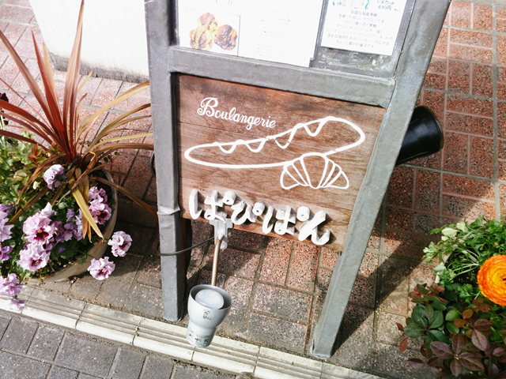
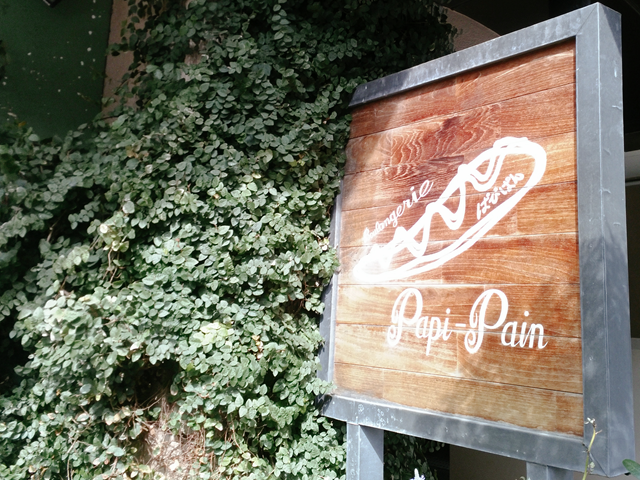
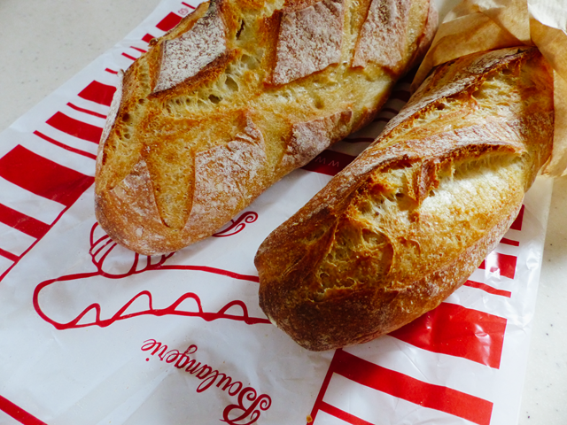
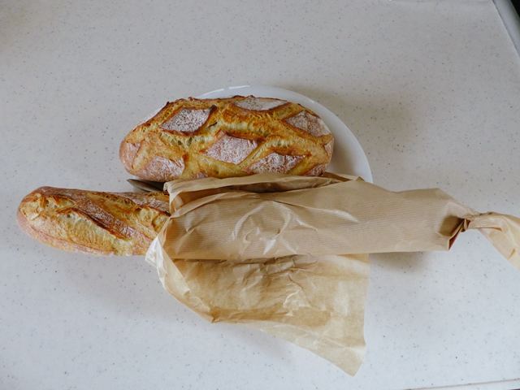

ちょっと出かける用事もあったので、自転車でポタリング（散歩）してきました。
帰り際、前から寄ってみたかったおいしいパン屋さんと評判の、「ぱぴぱん」に行ってきました。

こじんまりした店内に結構スタッフがたくさんいました。繁盛店ですね。
ブランジェリーぱぴ・ぱん
〒468-0051
名古屋市天白区植田3丁目－1209-1
サンテラスタカギ1FTEL (052)808-7539
営業時間：8時～19時 定休日 日・月
専門店だからパン、高いのかなーって思っていましたが、良心的な価格でした。以外に、家から近いということもわかりました。こっちの方面はあまり用事がないので来ないので今までノーチェックでした。
バゲットとパンフランスの定番をゲットしました。見た目からして期待できそうです。まだ食べていませんが、夜食か夕食時に食べようかと。

大きさはこのくらいです。１つ290円で580円です。この組み合わせなら、朝食用だと自分の場合は、３日分くらいです。

常用している、三越のJohanで一番大きいフランスパンが450円くらいですが、あれだと4日くらいなのでこちらのほうが少しお値段上です。でも、たぶん、めちゃくちゃうまいはずなので、他のパンが食べられなくなるかもです。
37km ポタリングしたら、少し疲れました。散歩としてはちょっと長めの距離でした。ちなみに、バッテリーはまだ余裕でした。50km はいけそうです。実家まで50km 弱なので、もう少し天気がよくなったら、母親の顔でも見てくることにします。